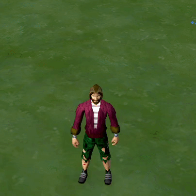
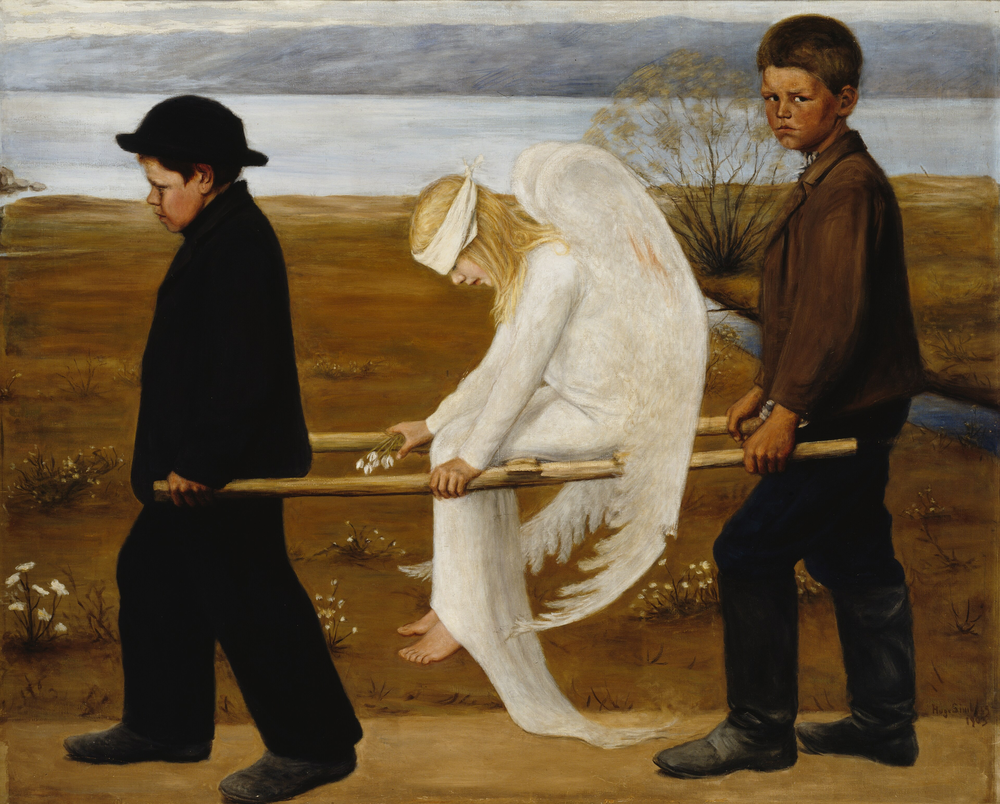

PAIDAGÓGOS 'παιδαγωγός'
ÚKOL SPLNĚN
Úkol úspěšně splněn! Můžeš hledat dál, dobrodruhu.
Přehrát L. K. ~ Luciferský Komplex?
Jsi totiž už jenom kousek od finále!
Některá slova zůstávají, i když už je pozdě je vzít zpátky. Zůstávají v prázdných pokojích, kde po nás zbyly jen nedopité šálky a věci, které jsme nestihli říct. Čas odnese hlasy, tváře i známá jména, ale ne to, co jsme si navzájem způsobili. Až se jednou rozpadnou střechy, zhasnou poslední okna a svět umlkne, někde v tom tichu pořád zůstane ozvěna těch slov. Ne jako varování. Jako poslední důkaz, že tu někdo byl — a že už se nevrátí.No, no, no, kotě..💁♂️ Nebudeme to tu přece tolik hrotit..💅🤭🙂Každopádně, děkujeme!👏 Vyhráváš mixér! - L. K. 🤭

Pustit video Když_nasazení_nestačí - Afrika.mp4?